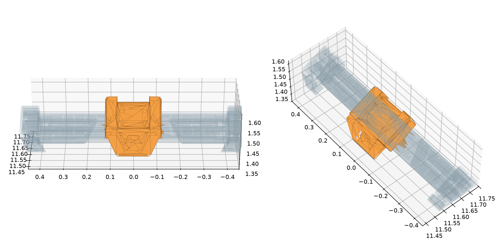

场景使用 Sentry26 原场地网格顶部滑轨中央板件。原轨道、支架和板件外形保留；滑块零位与原网格坐标一致。
| 项目 | 数值 |
|---|---|
| 原网格三角面 | 124965 |
| 静态三角面 | 123903 |
| 中央可动板件 | 1062 |
| 板件世界高度范围 | 1.3756–1.5844 m |
| 仿真滑动范围 | 沿 Y 轴 ±0.22 m，速度 0.2 m/s；可调测试参数 |
simulation/base_mesh.py 从原三角网格分组，运行目录 original_base/ 保存分离网格和 partition.json。静态定位地图同步排除可动板件，防止将移动目标作为固定定位参考。源 STL 保持不变。

原 STL 没有颜色、纹理或部件语义。当前完成几何分离和关节运动核验；原板件视觉命中尚未验证。相机识别应使用原有可见特征的材质或纹理，不增加独立装甲板几何。旧固定基地表面的 30 s 结果不代表移动装甲板视觉任务性能。